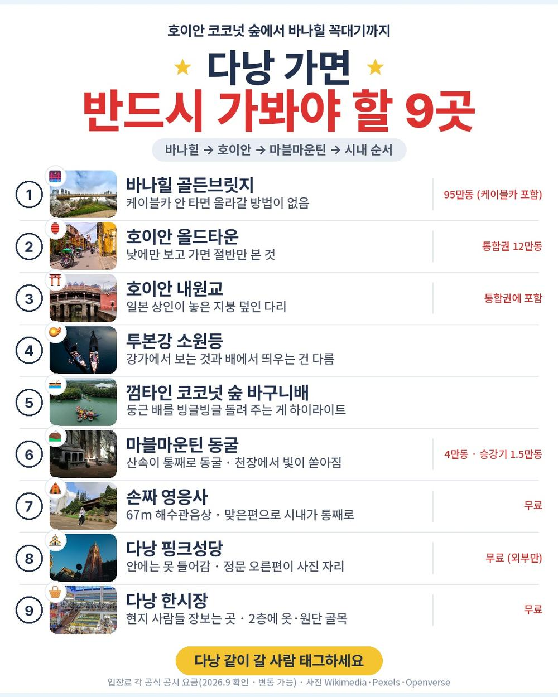
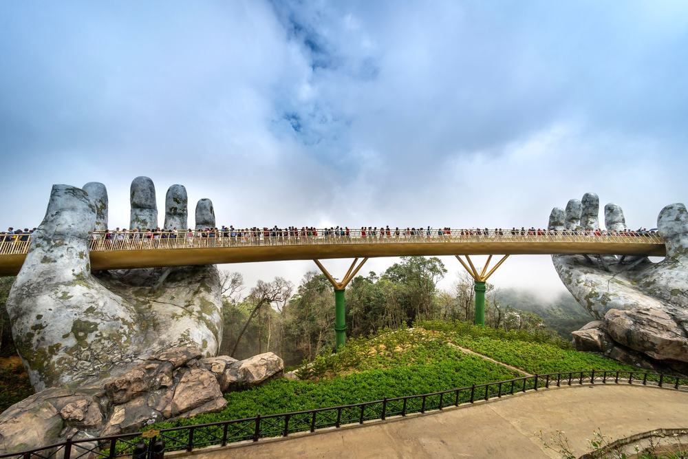
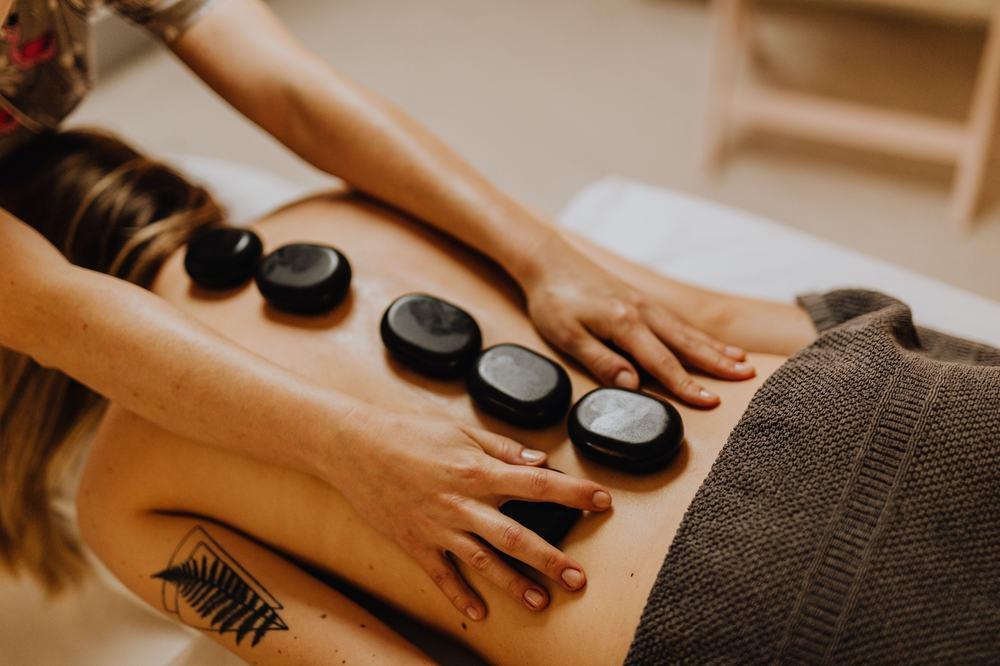
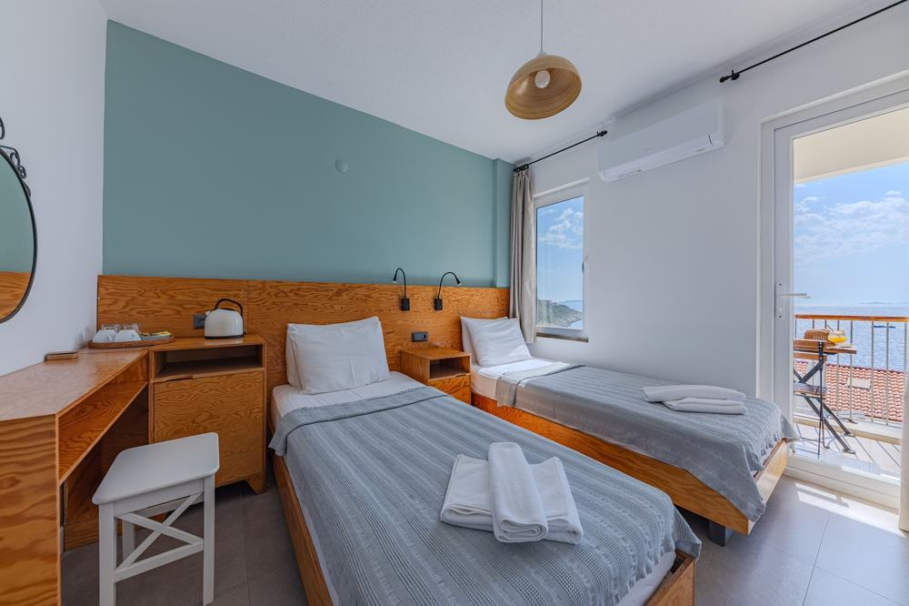

편한여행사 다낭 패키지 여행 71만원, 5성 오션뷰에 마사지 2시간 두 번까지 넣은 노팁 노옵션

부모님 모시고 갈 다낭을 부산 출발로 찾고 있었음. 김해에서 뜨는 다낭 노선은 많은데 대부분 밤에 떠서 새벽에 내리는 일정이라 첫날이 통째로 날아감.
그러다 3박 5일짜리가 하나 걸림. 이건 김해에서 아침 8시 30분에 뜸. 상품 이름에 'NO팁/NO옵션'이 붙어 있고, 가이드·기사 경비가 포함이라고 적혀 있었음. 호텔은 신축 5성, 마사지는 2시간짜리를 두 번 받음.
결론 — 추천. 호텔과 쉬는 시간에 값을 쓴 상품이고, 현지에서 따로 내는 돈이 팁 몇 달러와 점심 두 끼뿐임. 다만 귀국 0시 30분 비행기가 힘든 분, 쇼핑센터 방문 자체가 싫은 분, 호텔 이름을 미리 확정해야 하는 분은 아님.
71만 1천원에 저게 진짜 다 되는지 궁금해서 원문을 뜯어봤음.
| 항목 | 내용 |
|---|---|
| 가격 | 1인 711,100원 (2인 1실 기준 · 10월 출발) |
| 여행사 | 편한여행사 |
| 항공 | 비엣젯 직항 · 김해 08:30 → 다낭 11:00 / 귀국 00:30 → 김해 06:50 |
| 숙소 | 신축 5성 3박 (나스타 셀리아 또는 동급 · 전 객실 오션뷰로 안내) |
| 일정 | 3박 5일 · 전용 차량 · 한국어 가이드 · 가이드·기사 경비 포함 |
| 가는 곳 | 바나힐 · 호이안 올드타운과 야경투어 · 바구니배 · 마블마운틴 · 영응사 · 핑크성당 (관광 5회) |
| 순서 | 다루는 것 | 한 줄 결론 |
|---|---|---|
| 1 | 구성 뜯어보기 | 가이드 경비·선택관광이 둘 다 0 |
| 2 | 일정 살펴보기 | 둘째 날이 제일 꽉 차고, 마사지가 이틀에 나뉨 |
| 3 | 자유여행 VS 패키지 | 직접 짜면 94만원 | 패키지가 20만원쯤 쌈 |
1. 구성 뜯어보기
요약 — 항공·신축 5성 3박·식사 9회·관광 5회·가이드와 기사 경비·보험이 다 들어 있음. 현지에서 더 내는 돈은 마사지 팁 4달러 두 번, 바구니배 팁 1달러, 점심 두 끼임.
1-1. 71만 1천원에 들어 있는 것

포함 항목을 원문에서 그대로 옮기면 이럼.
- 왕복 항공권 + 유류할증료 + 세금
- 신축 5성 3박 (2인 1실 · 한 호텔 연박)
- 식사 9회 — 한식 저녁 두 번, 마지막 저녁은 소불고기 샤브샤브
- 관광 5회 입장료
- 전용 차량 · 한국어 가이드 · 가이드·기사 경비 · 여행자보험
관광 5회가 핵심임. 원문 이름 그대로 옮기면 바나힐 테마파크 입장권, 호이안 야경투어(소원배+소원등+야시장), 바구니배 투어, 럭셔리 전동카, 아로마 핫스톤 마사지 2시간임. 마사지는 2일차와 3일차에 한 번씩, 두 번 받음. 일정표에는 여기에 마블마운틴, 호이안 올드타운, 영응사, 핑크성당, 한시장, 커피 미션이 더 있음.
출발일별 요금 확인하기
https://naver.me/IDkUHTVO
1-2. 가이드 경비와 선택관광

다낭 상품은 보통 가이드·기사 경비를 현지에서 달러로 따로 받음. 이 상품은 포함임. 원문 불포함 칸에 '가이드/기사 경비 없음'이라고 적혀 있음.
선택관광도 없음. 원문 선택관광 칸이 비어 있음. 현지에서 "이거 하나 더 하시죠" 소리를 들을 일이 구조적으로 적음.
쇼핑은 2회임. 건강식품 약 40분, 커피 약 40분. 사는 건 자유고 환불도 됨.
1-3. 현장에서 더 낼 돈
| 항목 | 금액 | 비고 |
|---|---|---|
| 가이드·기사 경비 | 0원 | 상품가에 포함 |
| 마사지 팁 | USD 16 (약 22,000원) | 1인 1회 4달러 × 2회 × 2인 |
| 바구니배 팁 | USD 2 (약 3,000원) | 1인 1달러 |
| 점심 두 끼 | 약 40,000원 | 1일차 · 3일차(바나힐 정상) 자유식 |
| 선택관광 | 0원 | 목록 없음 |
| 합계 (2인) | 약 70,000원 | 상품가 142만 2천 + 7만 = 약 149만원 |
한 사람으로 치면 약 75만원임.
1절 자주 나오는 질문
Q. 가이드 경비를 정말 안 내나요?
A. 안 냄. 원문 불포함 칸에 '가이드/기사 경비 없음'이라고 적혀 있고, 핵심 포인트에도 '기사&가이드팁 포함'이 있음. 마사지 팁 같은 매너팁만 따로임.
Q. 선택관광이 진짜 없나요?
A. 원문 선택관광 칸이 비어 있고 상품 이름에 NO옵션이 붙어 있음. 바나힐·야경투어·바구니배·전동카·마사지가 포함 항목으로 적혀 있음.
Q. 인솔자가 같이 가나요?
A. 인솔자는 불포함임. 김해공항 수속은 각자 하고, 다낭 공항에서 '편한여행사' 피켓을 든 한국어 가이드를 만나 전 일정을 함께 함.
2. 일정 살펴보기
요약 — 1일차 오전 도착 후 해변 휴식, 2일차 마사지·마블마운틴·바구니배·호이안 야경, 3일차 바나힐·두 번째 마사지, 4일차 시내 관광 후 자정 넘어 비행기. 제일 꽉 찬 날은 2일차임.
2-1. 하루하루 어디를 가나

| 일차 | 가는 곳 | 식사 | 숙소 |
|---|---|---|---|
| DAY 1 | 김해 08:30 → 다낭 11:00 → 호텔 체크인 · 미케비치 휴식 | 석 쌀국수 | 신축 5성 |
| DAY 2 | 핫스톤 마사지 2시간 → 마블마운틴 → 바구니배 · 전동카 → 호이안 올드타운 · 야경투어 | 조 · 중 현지식 · 석 한식 | 신축 5성 |
| DAY 3 | 바나힐 케이블카 · 골든브릿지 · 정상 자유시간 → 핫스톤 마사지 2시간 | 조 · 중 자유식 · 석 반세오 | 신축 5성 |
| DAY 4 | 체크아웃 전 자유 → 쇼핑 2회 → 영응사 · 핑크성당 · 한시장 → 커피 미션 | 조 · 중 현지식 · 석 샤브샤브 | 기내 |
| DAY 5 | 다낭 00:30 → 김해 06:50 | — | — |
| 일차 | 버스 이동 | 걷기 | 포함 식사 |
|---|---|---|---|
| DAY 1 | 약 0.5시간 | 적음 | 석 특별식 |
| DAY 2 | 약 2시간 | 보통 | 조 호텔식 · 중 현지식 · 석 한식 |
| DAY 3 | 약 1.5시간 | 보통 | 조 호텔식 · 석 현지식 (점심은 자유식) |
| DAY 4 | 약 1.5시간 | 적음 | 조 호텔식 · 중 현지식 · 석 한식 |
| DAY 5 | 거의 없음 | 적음 | 포함 끼니 없음 |
| 합계 | 약 5.5시간 | - | 9끼 (현지식 4 · 호텔식 3 · 한식 2) |
요약 — 버스 이동은 5일 동안 약 5.5시간, 포함 식사는 9끼(현지식 4 · 호텔식 3 · 한식 2)임. 가장 많이 걷는 날은 DAY 2임.
2-2. 아침 비행기라 첫날이 살아 있음

김해 출발 다낭 상품은 밤에 떠서 새벽에 내리는 게 흔함. 이건 반대로 아침 8시 30분에 떠서 현지 오전 11시에 내림. 베트남이 한국보다 두 시간 늦어서 비행은 네 시간 반임.
첫날 점심은 포함이 아님. 호텔에 짐을 풀고 오후는 미케비치나 호텔에서 쉼. 방에는 웰컴 과일이 놓여 있고, 저녁은 현지 식당 쌀국수임.
대신 돌아올 때가 자정 넘은 비행기임. 4일차 저녁까지 먹고 공항으로 가서 0시 30분에 떠 김해에 아침 6시 50분에 내림. 이게 이 상품에서 제일 먼저 갈리는 지점임.
2-3. 마사지가 이틀에 나뉜 게 이 상품의 결

2일차는 아침에 핫스톤 마사지 2시간으로 시작함. 그다음 마블마운틴 동굴, 코코넛 숲 바구니배 40분, 지붕 없는 전동카 20~30분, 해 질 무렵 호이안 올드타운을 걷고 밤엔 소원배를 타고 소원등을 띄움. 제일 긴 날이지만 바구니배·전동카는 앉아서 감.
3일차는 바나힐임. 케이블카로 골든브릿지에 먼저 들르고 다시 정상으로 올라가 자유시간. 점심은 여기서 각자 먹음. 내려와서 두 번째 마사지 2시간을 받고 저녁은 반세오 세트임. 걷고 나서 바로 쉬게 짜 놓은 게 이 상품의 결임.
2-4. 호텔은 신축 5성 한 곳에서 세 밤

원문 숙소 칸에 Nesta Celia Da Nang Hotel 5성 또는 동급이 적혀 있고, 상품이 내세우는 문구가 '전 객실 오션뷰'임. 세 밤을 한 곳에서 자서 짐은 한 번만 풂.
호텔 이름을 미리 확정해야 마음이 놓이는 분께는 '또는 동급'이 걸리는 점임. 대신 등급은 5성으로 정해져 있음. 혼자 쓰면 3박에 21만원이 붙음.
2절 자주 나오는 질문
Q. 많이 걷나요?
A. 2일차 호이안 올드타운이 제일 많음. 차가 안 들어가는 골목이라 걸어서 봄. 바구니배·전동카·바나힐 케이블카는 앉아서 가고, 사이사이 마사지 두 시간이 두 번 들어 있음.
Q. 비자 필요한가요?
A. 한국 국적은 45일 무비자임. 여권 유효기간이 6개월 이상 남아 있어야 함.
Q. 환전은 뭘로 하나요?
A. 원문 안내는 미국 달러가 기본이고 베트남 동은 소량임. 마사지 팁 4달러, 바구니배 팁 1달러라 1달러짜리를 넉넉히 챙기면 편함.
3. 자유여행 VS 패키지 | 직접 짜면 94만원
요약 — 같은 일정을 직접 짜면 1인 94만원쯤 듦. 패키지는 팁과 점심까지 더해 약 75만원임. 패키지가 20만원쯤 쌈.
3-1. 같은 일정을 직접 짜면

같은 일정을 혼자 짠다고 치고 항목별로 계산해 봄. 10월 기준, 2인 1실 1인분임. 환율은 1달러 1,400원, 1만 동 약 550원으로 잡았음. 대부분 추정치라 근거 열에 적어 둠.
| 항목 | 금액 | 근거 |
|---|---|---|
| 김해–다낭 왕복 항공 | 350,000원 | 10월 직항 왕복 · 위탁 수하물 포함 기준 (추정) |
| 신축 5성 오션뷰 3박 | 180,000원 | 5성 2인 1실 1박 12만원 안팎의 1인분 (추정) |
| 바나힐 입장권 | 52,000원 | 95만 동 · 케이블카 포함 공시 요금 |
| 핫스톤 마사지 2시간 × 2회 | 100,000원 | 1회 35달러 안팎 (추정) |
| 호이안 통합권 + 야경 소원배 | 30,000원 | 통합권 12만 동 + 소원배 (추정) |
| 바구니배 + 전동카 | 25,000원 | (추정) |
| 식사 9회 | 90,000원 | 패키지 포함분과 같은 끼니 · 1회 1만원 (추정) |
| 공항 ↔ 호텔 · 바나힐 · 호이안 이동 | 100,000원 | 바나힐 왕복·호이안 왕복·공항 이동을 차량으로 (추정) |
| 여행자보험 | 15,000원 | 5일 기준 |
| 가이드 | — | 자유여행은 없음 |
| 합계 | 약 940,000원 |
패키지는 711,100원 + 팁 약 13,000원 + 점심 약 20,000원 = 약 744,000원임.
3-2. 그래서 뭐가 다른가
숫자만 봐도 패키지가 20만원쯤 쌈. 마사지 2시간 두 번과 바나힐 입장권만 따로 사도 15만원인데 그걸 상품가 안에 넣은 것임.
그리고 표에 못 넣은 게 있음. 바나힐은 시내에서 차로 한 시간 가까이, 호이안은 반대 방향이라 자유여행이면 날마다 차를 잡아야 함. 전용 차량이 그걸 다 이어 줌.
여기에 가이드가 붙음. 자유여행 계산표에 가이드 행이 비어 있는 게 그 뜻임 — 0원이 아니라 살 수 없는 것임. 그리고 이 상품은 그 가이드 경비까지 상품가 안에 있음.
3-3. 어느 쪽이 맞나
| 자유여행이 맞음 | 패키지가 맞음 |
|---|---|
| 호텔에서 안 나오고 쉴 것임 | 바나힐·호이안·바구니배를 다 볼 것임 |
| 그랩 부르는 게 익숙함 | 이동은 맡기고 앉아만 있고 싶음 |
| 마사지 가게를 직접 고르고 싶음 | 현지에서 추가 결제하기 싫음 |
| 쇼핑센터에 한 번도 안 들르고 싶음 | 5성 호텔을 한 곳에서 편하게 쓰고 싶음 |
3절 자주 나오는 질문
Q. 자유여행이 더 싸지 않나요?
A. 계산해 보면 자유여행이 약 94만원, 패키지가 약 75만원임. 마사지 두 번과 바나힐, 이동 차량을 따로 사면 금방 벌어짐.
Q. 부산에 안 사는데 이 상품을 봐도 되나요?
A. 김해공항 출발이라 수도권이면 국내 이동이 먼저 붙음. 아침 8시 30분 비행기라 전날 부산에 와 있어야 해서 계산이 달라짐. 인천 출발 다낭 상품을 보시는 게 나음.
Q. 몇 명이 모여야 떠나나요?
A. 원문 주의사항에 성인 4명 이상 예약 시 출발이라고 적혀 있음. 예약하면 오는 확인 연락에서 물어보면 됨.
마무리
정리하면 이럼.
추천함. 71만 1천원에 신축 5성 3박, 바나힐·호이안 야경투어·바구니배·전동카, 그리고 핫스톤 마사지 2시간이 두 번 들어 있음. 가이드 경비도 선택관광도 없어서 현지에서 더 나가는 돈이 팁 몇 달러와 점심 두 끼임.
이런 분은 고르면 안 됨. 귀국 0시 30분 비행기가 힘든 분, 쇼핑센터 방문 자체가 싫은 분, 호텔 이름을 미리 확정해야 마음이 놓이는 분.
걸리는 점이 있긴 한데 상품 흠이라기보다 맞는 사람과 안 맞는 사람을 가르는 조건에 가까움.
오늘 기준 출발일별 요금 보기
https://naver.me/IDkUHTVO
함께 보면 좋은 글
롯데관광 푸꾸옥 패키지 여행 64만원, 케이블카에 빈펄 사파리까지 넣은 노옵션
https://blog.naver.com/robotnady10/224425527320
노랑풍선 오사카 패키지 여행 80만원, 나라 온천에 교토 청수사까지 넣은 이유
https://blog.naver.com/robotnady10/224425182825
이 글에는 제휴 링크가 포함되어 있으며, 링크를 통해 예약하시면 일정 수수료를 받습니다. 가격은 동일합니다. 가격과 구성은 2026년 9월 30일 확인 기준이며 출발일에 따라 달라질 수 있습니다.
▶ 이 상품, 영상으로 보기 (유튜브)
▶ 다낭 패키지 오늘 값 나란히 비교
사진 출처: goldenbridge_1 — Pexels / massage_1 — Pexels / dp_basket_boat_1 — Pexels / mykhe_1 — Pexels / hoian_night_1 — Pexels / hw_hotel_room_ocean_1 — Pexels / dn_lantern_boat_1 — Pexels